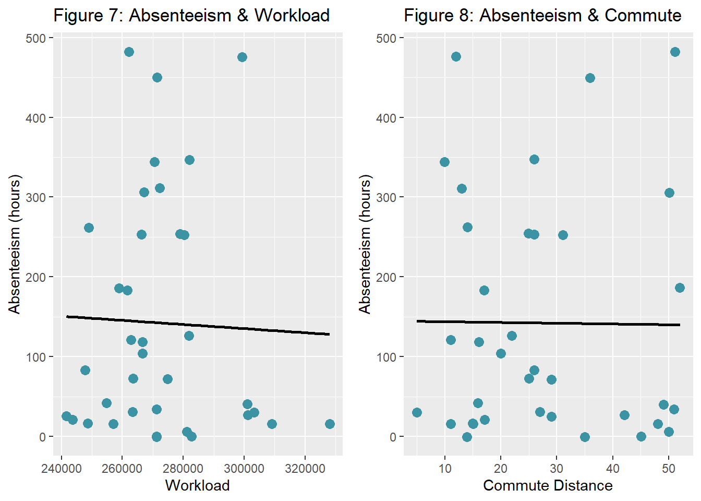

3.2 Employee Absenteeism
In this section, we’ll discuss Employee Absenteeism and leverage the topic to practice exploration and hypotheses set by visualization. I based this section on a previous article on my blog: Visualizing Absenteeism At Work.
3.2.1 The use case
Employee Absenteeism is a failure to be or remain at work as scheduled or planned. Excessive absenteeism indicates issues and challenges for the organization and within individuals.
Absenteeism causes employers productivity loss. There are two main components for this loss: First, absenteeism reduces the outputs of absent employees and the employees who serve as a replacement. Secondly, there are administrative tasks adjusting the workflow.
There are implications for individuals too. First, the absent employee may lose pay and experience decreased performance and harm perception. Secondly, co-workers may experience increased workloads that may end in burnout. In addition, clients may suffer lousy service.
The organization can evaluate its absenteeism rate in comparison to the sector or country benchmarks. But such a comparison will not point to the absenteeism causes and the proper intervention to reduce it. However, exploring the associations between absenteeism, employee characteristics, and work characteristics are helpful for actionable insights.
3.2.2 Data source
I found the data of this use case in the UC Irvine Machine Learning Repository. The database was created at a courier company in Brazil. It includes records of absenteeism from July 2007 to July 2010.
Variables in this dataset encompass time and duration of absence, employee background (distance from residence to work, service time, age, education, social drinking, social smoking), and work characteristics (workload, hit targets, disciplinary failure).
The structure of this data set is unique. It contains 740 rows and 20 columns. Each record represents an occurrence of absenteeism due to a single reason, measured in hours. Therefore, each employee may have multiple records marked with the same employee’s ID. These records should be summed up.
The dataset was used in academic research at the Universidade Nove de Julho – Postgraduate Program in Informatics and Knowledge Management. The data creators are Andrea Martiniano, Ricardo Pinto Ferreira, and Renato Jose Sassi.
A special thanks to my colleagues who wrote the open book HR Analytics in R and brought this data set. However, my approach is different. I aim my analysis towards actionable insights, as if my clients are HR leaders, rather than simply exploring the data for analysis, as my colleagues did. Therefore, all variables are considered predictors in creating the visualizations presented in this use case, while absenteeism is the outcome.
3.2.3 HR briefing
Suppose you are an HR leader at a courier company. You prepare to advise an intervention plan for the severe issue of driver absenteeism that costs the company its productivity loss.
You have records of absent employees for a couple of years. You also have data about employee background in your HRIS. In addition, the business unit provides you with data about the work characteristics of drivers.
You ask a data scientist who supports your work to consider those employee background variables and work characteristics variables as predictors of absenteeism. But first, you want to explore the associations by visualizing them.
3.2.4 Analytics methods
The focus of this section is visualization. I visualized the data to explore it, mainly to get a glance into the cause of absenteeism in employee characteristics and work attributes. Obviously, an actual project will include additional multivariate statistics and statistical models, but this is beyond the scope of this section.
Visualization is a core skill and activity of a data scientist. To excel in visualizing data, understanding statistics and the proper design are necessary. I neglect the explanations of what makes a good visualization, though, letting the charts speak for themselves. However, in most visualizations, I added some remarks to practice critical thinking, which is not only the responsibility of the data scientist but also his sponsors and audience, aka you.
In every analysis process, visualization serves two functions: exploring the data and stewarding it to the audience. In this use case, I tried to do both at once. Therefore, I did not settle for sloppy visualization, which is sufficient for the exploration phase, but I took the effort to make the visualization compelling for reporting.
Some of the following visualizations I created may seem complicated at first glance. But when I used composed graphical representations of the data, the objective was to explore, with the fewest charts, the association between absenteeism and its two predictor kinds: employee characteristics and work characteristics. Nevertheless, I kept the story proper, ensuring it was appealing, using the right charts, and emphasizing the importance.
3.2.5 Analysis using R
1 - Absenteeism and Employee Background
Does absenteeism in the Brazilian courier company relate to its employees’ background? To be more precise, can we point to specific employee groups more prone to be absent? And maybe intervein among these groups?
In this part of the analysis, I explored employee background variables, such as age, tenure, body attributes, social behaviors, and family coincidence. I tried to leverage whatever variables I could find in the data. However, People Analysts who work with actual data in their organizations may discover many more relevant variables. In addition, other variables in this dataset are not typical in organizations.
1.1 Employee Age and Tenure
How absenteeism, measured in hours, is associated with employee age or tenure? To explore the relationship between these three numerical variables, I suggested a plot that captures the distribution of each variable, scatters each pair of variables and presents the correlation.
As clearly shown in Figure 1, absenteeism is not related to age or tenure in the courier company. Notice, however, that age and tenure are correlated in this organization. It may not be the case among other occupations and organizations. Furthermore, the density plots that give you an impression of the shape of the distribution of each variable may also be unique for this case study.
dat.fig1 <- dat %>%
select(ID, Absenteeism_time_in_hours, Age, Service_time) %>%
group_by(ID) %>%
summarize(Absenteeism = sum(Absenteeism_time_in_hours),
Age = mean(Age),
Tenure = mean(Service_time)) %>%
select(Absenteeism, Age, Tenure)
my_scatter <- function(data,mapping){
ggplot(data=data, mapping=mapping) +
geom_point(color="#3b93a4")
}
my_density <- function(data,mapping){
ggplot(data=data,mapping=mapping) +
geom_density(alpha=0.65,
fill="#3b93a4")
}
fig1 <- ggpairs(dat.fig1,
lower=list(continuous=my_scatter),
diag=list(continuous=my_density))
fig1 <- fig1 + labs(title="Figure 1: Absenteeism, Age and Tenure")
fig11.2 Employee Body Attributes
Does absenteeism associate with employee weight, height, or body mass index? Not at all, according to Figure 2. It may be nonsense to explore this in the context of an organization, and obviously, you don’t collect such data in most occupations. However, since the data set includes those variables, why not explore them? The following exploration is precisely the same as the previous one. Since I already had the code, I could quickly reproduce the visualization.
Notice that some employees in this data set are obese. If we find a positive correlation between absenteeism and weight, it doesn’t necessarily mean obesity causes absenteeism. Correlation does not imply causation. The alternative direction of the relation is possible too: People who tend to be absent gain more weight, for some reason. Either way, it’s not the case here.
dat.fig2 <- dat %>%
select(ID, Absenteeism_time_in_hours, Weight, Height, Body_mass_index) %>%
group_by(ID) %>%
summarize(Absenteeism = sum(Absenteeism_time_in_hours),
Weight = mean(Weight),
Height = mean(Height),
BMI = mean(Body_mass_index)) %>%
select(Absenteeism, Weight, Height, BMI)
fig2 <- ggpairs(dat.fig2,
lower=list(continuous=my_scatter),
diag=list(continuous=my_density))
fig2 <- fig2 + labs(title="Figure 2: Absenteeism and employee body attributes")
fig21.3 Employee Social Behaviors
dat.fig3 <- dat %>%
select(ID, Absenteeism_time_in_hours, Social_smoker, Social_drinker) %>%
group_by(ID) %>%
summarize(Absenteeism = sum(Absenteeism_time_in_hours),
Smoking = mean(Social_smoker),
Drinking = mean(Social_drinker)) %>%
select(Absenteeism, Smoking, Drinking) %>%
mutate(Smoking = as.factor(recode(Smoking, `0`="No", `1`="Yes"))) %>%
mutate(Drinking = as.factor(recode(Drinking, `0`="No", `1`="Yes")))
fig3.1 <- ggplot(dat.fig3, aes(x=Smoking, y=Absenteeism)) +
geom_boxplot(aes(fill=Smoking)) +
labs(title="Figure 3: Absenteeism and Smoking", x="Smoking", y="Absenteeism (hours)") +
theme(legend.position = "none") +
scale_fill_manual(values=c("#FFFFFF", "#3b93a4"))
fig3.2 <- ggplot(dat.fig3, aes(x=Drinking, y=Absenteeism)) +
geom_boxplot(aes(fill=Drinking)) +
labs(title="Figure 4: Absenteeism and Drinking", x="Drinking", y="Absenteeism (hours)") +
theme(legend.position = "none") +
scale_fill_manual(values=c("#FFFFFF", "#3b93a4"))
grid.arrange(fig3.1, fig3.2, nrow=1)#testing for independency
#table(dat.fig3$Smoking, dat.fig3$Drinking)
#chisq.test(table(dat.fig3$Smoking, dat.fig3$Drinking))1.4 Employee Family Members
dat.fig4a <- dat %>%
select(ID, Absenteeism_time_in_hours, Son, Pet) %>%
group_by(ID) %>%
summarize(Absenteeism = sum(Absenteeism_time_in_hours),
Children = mean(Son),
Pets = mean(Pet)) %>%
mutate(Children = recode_factor(Children, `0`="No kids", `1`="Have kids", `2` = "Have kids",
`3` = "Have kids", `4` = "Have kids")) %>%
mutate(Pets = recode_factor(Pets, `0`="No pets", `1`="Have pets", `2` = "Have pets",
`3` = "Have pets", `4` = "Have pets",
`5` = "Have pets", `6` = "Have pets",
`7` = "Have pets", `8` = "Have pets",)) %>%
select(Absenteeism, Children, Pets)
fig4a.1 <- ggplot(dat.fig4a, aes(x=Children, y=Absenteeism)) +
geom_boxplot(aes(fill=Children)) +
labs(title="Figure 5: Absenteeism and Children", x="Children", y="Absenteeism (hours)") +
theme(legend.position = "none") +
scale_fill_manual(values=c("#FFFFFF", "#3b93a4"))
fig4a.2 <- ggplot(dat.fig4a, aes(x=Pets, y=Absenteeism)) +
geom_boxplot(aes(fill=Pets)) +
labs(title="Figure 6: Absenteeism and Pets", x="Pets", y="Absenteeism (hours)") +
theme(legend.position = "none") +
scale_fill_manual(values=c("#FFFFFF", "#3b93a4"))
grid.arrange(fig4a.1, fig4a.2, nrow=1)#testing for independency
#table(dat.fig4a$Children, dat.fig4a$Pets)
#chisq.test(table(dat.fig4a$Children, dat.fig4a$Pets))2 - Absenteeism and Work Characteristics
2.1 Absenteeism, Workload and Commute Distance
dat.fig5 <- dat %>%
select(ID, Absenteeism_time_in_hours, Work_load_Average_per_day, Distance_from_Residence_to_Work, Education) %>%
group_by(ID) %>%
summarize(Absenteeism = sum(Absenteeism_time_in_hours),
Workload = mean(Work_load_Average_per_day ),
Distance = mean(Distance_from_Residence_to_Work),
Education = mean(Education)) %>%
mutate(Education = recode_factor(Education, `1`="Low", `2`="Mid", `3` = "High")) %>%
select(Absenteeism, Workload, Distance, Education)
fig5.1a <- ggplot(dat.fig5, aes(x=Workload, y=Absenteeism)) +
geom_jitter(size=3, color="#3b93a4") + geom_smooth(method = lm, se = FALSE, color="black") +
labs(title="Figure 7: Absenteeism & Workload", x="Workload", y="Absenteeism (hours)")
fig5.2a <- ggplot(dat.fig5, aes(x=Distance, y=Absenteeism)) +
geom_jitter(size=3, color="#3b93a4") + geom_smooth(method = lm, se = FALSE, color="black") +
labs(title="Figure 8: Absenteeism & Commute", x="Commute Distance", y="Absenteeism (hours)")
grid.arrange(fig5.1a, fig5.2a, nrow=1)
fig5.1 <- ggplot(dat.fig5, aes(x=Workload, y=Absenteeism, fill=Education, color=Education)) +
geom_jitter(size=3) + geom_smooth(method = lm, se = FALSE, aes(colour=Education)) +
scale_color_manual(values=c("#92A9BD", "#3b93a4", "#072227")) +
scale_fill_manual(values=c("#92A9BD", "#3b93a4", "#072227")) +
labs(title="Figure 9: Absenteeism & Workload", subtitle="by Education Level",
x="Workload", y="Absenteeism (hours)" ) +
theme(legend.position="top")
fig5.2 <- ggplot(dat.fig5, aes(x=Distance, y=Absenteeism, fill=Education, color=Education)) +
geom_jitter(size=3) + geom_smooth(method = lm, se = FALSE, aes(colour=Education)) +
scale_color_manual(values=c("#92A9BD", "#3b93a4", "#072227")) +
scale_fill_manual(values=c("#92A9BD", "#3b93a4", "#072227")) +
labs(title="Figure 10: Absenteeism & Commute", subtitle="by Education Level",
x="Commute Distance", y="Absenteeism (hours)" ) +
theme(legend.position="top")
grid.arrange(fig5.1, fig5.2, nrow=1)2.2 Absenteeism, Hitting targets and Disciplinary failures
dat.fig6 <- dat %>%
select(ID, Absenteeism_time_in_hours, Hit_target, Disciplinary_failure) %>%
group_by(ID) %>%
summarize(Absenteeism = sum(Absenteeism_time_in_hours),
Success = mean(Hit_target),
Indicipline = mean(Disciplinary_failure)) %>%
mutate(AbsenteeismDir = ifelse(Indicipline>0.15, -1*Absenteeism, Absenteeism)) %>%
select(AbsenteeismDir, Success, Indicipline)
fig6.1 <- ggplot(dat.fig6, aes(x=Success, y=AbsenteeismDir)) +
geom_segment( aes(x=Success, xend=Success, y=0, yend=AbsenteeismDir), color="grey") +
geom_point( color="#3b93a4", size=2) +
theme_light() +
theme(
panel.grid.major.x = element_blank(),
panel.border = element_blank(),
axis.ticks.x = element_blank()
) +
labs(title="Figure 11: Absenteeism and Target Hits", x="Hit Target", y="Absenteeism (hours)") +
annotate("text", x = 90.5, y = 400, label = "Disciplined Employees", colour="#3b93a4", size=5) +
annotate("text", x = 90.5, y = -200, label = "Undisciplined Employees", colour="#3b93a4", size=5) +
annotate("rect", xmin = 88, xmax = 98, ymin = -400, ymax = 0, alpha = .1)
fig6.12.3 When Absenteeism Occures? Months and Seasons
dat.fig7 <- dat %>%
select(Absenteeism_time_in_hours, Month_of_absence) %>%
group_by(Month_of_absence) %>%
summarize(Absenteeism = sum(Absenteeism_time_in_hours))
fig7 <- ggplot(dat.fig7, aes(x=Month_of_absence, y=Absenteeism)) +
geom_line(color="#3b93a4") + geom_point(color="#3b93a4", size=3)+
scale_x_discrete(name ="Months",
limits=c("JAN","FEB","MAR","APR","MAY","JUN","JUL","AUG","SEP","OCT","NOV","DEC")) +
theme(axis.text.x = element_text(angle = 90, vjust = 0.5, hjust=1)) +
labs(title="Figure 12: Monthly Absenteeism", x="Month", y="Absenteeism (hours)")
dat.fig8 <- dat %>%
select(Absenteeism_time_in_hours, Day_of_the_week) %>%
group_by(Day_of_the_week) %>%
summarize(Absenteeism = sum(Absenteeism_time_in_hours))
fig8 <- ggplot(dat.fig8, aes(x=Day_of_the_week, y=Absenteeism)) +
geom_line(color="#3b93a4") + geom_point(color="#3b93a4", size=3)+
scale_x_discrete(name ="DAYS",
limits=c("Sun" ,"Mon","Tue","Wed","Thu","Fri", "Sat")) + ylim(200,1800) +
labs(title="Figure 13: Daily Absenteeism", x="Days", y="Absenteeism (hours)")
grid.arrange(fig7, fig8, nrow=1)dat.fig9 <- dat %>%
select(Absenteeism_time_in_hours, Day_of_the_week, Month_of_absence) %>%
group_by(Day_of_the_week, Month_of_absence) %>%
summarize(Absenteeism = sum(Absenteeism_time_in_hours))
fig9 <- ggplot(dat.fig9, aes(x=Day_of_the_week, y=Month_of_absence, fill=Absenteeism)) +
geom_tile() +
scale_fill_gradient(low = "#EDEDED", high = "#3b93a4") +
#theme_bw() +
theme_light() +
theme(
panel.grid.major.x = element_blank(),
panel.border = element_blank(),
axis.ticks.x = element_blank()
) +
scale_y_discrete(name ="Months",
limits=c("JAN","FEB","MAR","APR","MAY","JUN","JUL","AUG","SEP","OCT","NOV","DEC")) +
scale_x_discrete(name ="Days",
limits=c("Sun" ,"Mon","Tue","Wed","Thu","Fri", "Sat")) +
labs(title="Figure 14: Absenteeism by Days and Monthes - Heat Map") +
geom_text(aes(label = Absenteeism), color = "white", size = 4)
fig9